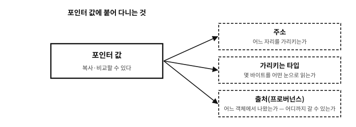

34 객체, 주소, 포인터
먼저 알아야 할 것
돌아보기
32장에서 “함수가 밖의 변수를 바꾸는 정공법은 변수의 주소를 값으로 복사해 넘기는 것”이라 했다. 5장의 지식으로 풀어 보면 — 주소를 “값으로 복사”할 수 있는 근거는 무엇이었나?
답. 주소가 번호처럼 다룰 수 있는 값이라는 것(5장) — 사물함 번호는 적어 둘 수도, 복사해 건넬 수도 있다. C에서 그 “주소를 담는 변수”의 타입이 포인터다. 오늘 배우는 것은 새 개념이 아니라, 5장의 착상에 문법 옷을 입히는 일이다.
한 가지만 미리 못박아 둔다. 복사하고 비교할 수 있다고 해서 포인터가 정수인 것은 아니다. C는 포인터를 정수와 다른 종류의 값으로 두고, 거기에 가리키는 타입과 출처(어느 객체에서 나왔는가)라는 계약을 붙인다. 6장에서 본 “번호가 같아도 같은 포인터가 아닐 수 있다”는 이야기가 여기서 시작되고, 36장의 프로버넌스에서 정식으로 마무리된다.
이 장이 끝나면
&와 *, 그리고 sizeof까지, 25장부터 미뤄 온 외상이 모두 청산된다.이 장에서 답할 질문
- 포인터 변수 자체의 크기는 얼마인가 —
sizeof p는? - 변수의 주소를 직접 찍어 보면 재미있을 것 같은데 — 왜 시연에서 주소 값을 인쇄하지 않았는가?
- 그러면 “주소는 정수다”라는 말은 틀린 것인가?
- 그러면
%p대신 언제나PRIxPTR를 쓰면 되지 않는가? - 그러면
void *는 왜 “아무 포인터나 담는 그릇”으로 쓸 수 있는가?
34.1 세 가지 표기 — 선언, &, *
포인터 문법은 세 조각이 전부다.
선언 — int *p;는 “int의 주소를 담는 변수 p”를 선언한다. 읽는 요령은 뒤에서부터다: “p는 포인터인데(*p), 가리키는 곳에 int가 있다”.
주소 얻기 — &n은 “n의 주소”라는 값이다. 25장의 sscanf(..., &n) 에서 스쳐 본 그 &가 드디어 정식 이름을 얻었다 — n이라는 사물함의 번호표를 떼어 주는 연산자다.
역참조 — *p는 “p에 적힌 주소로 찾아가서 그 칸”이라는 뜻이다. 읽는 자리에 있으면 그 칸의 값을 읽고, 대입의 왼쪽에 있으면 그 칸에 쓴다. 선언의 *와 수식의 *(역참조), 그리고 곱셈의 *가 같은 글자를 쓰는 것은 C의 악명 높은 절약 정신이다 — 자리로 구별하는 수밖에 없다.
시연으로 세 조각을 한 번에 본다. 32장의 숙제 — 함수가 원본을 바꾸는 정공법 — 까지 포함이다.
examples/ch34/ptr.c
#include <stdio.h>
void set_to(int *target, int value)
{
*target = value; /* 주소를 따라가 원본에 쓴다 */
}
int main(void)
{
int n = 1;
int *p = &n; /* p는 n의 주소를 담는다 */
printf("n at first: %d\n", n);
printf("p == &n ? %d\n", p == &n);
*p = 55; /* 역참조: p가 가리키는 곳(= n)에 쓴다 */
printf("n after *p = 55: %d\n", n);
set_to(&n, 99); /* 28장의 숙제 — 함수가 원본을 바꾼다 */
printf("n after set_to: %d\n", n);
return 0;
}
실행 결과
n at first: 1
p == &n ? 1
n after *p = 55: 55
n after set_to: 99
set_to(&n, 99)의 동선을 정확히 읽어 두면 포인터의 절반이 끝난다 — ① &n(주소라는 값)이 매개변수 target에 복사되고(32장의 값 복사 규칙은 그대로다!), ② 함수 안에서 *target = value가 그 주소로 찾아가 원본 칸에 쓴다. 값 복사의 세계는 하나도 깨지지 않았다 — 복사된 것이 주소였을 뿐이다.
34.2 sizeof — 그릇의 크기를 묻다
미뤄 둔 마지막 외상 — sizeof는 타입이나 대상의 바이트 크기를 내놓는 연산자다(값은 size_t 타입 — 크기 전용 부호 없는 정수이고, 서식은 %zu다). 25장의 fgets(line, sizeof line, stdin)이 이제 완전히 읽힌다: “line이라는 그릇의 바이트 수를 fgets에게 알려 준다”. 함수가 아니라 연산자라서 대부분 컴파일 시점에 값이 정해지고, sizeof(int)처럼 타입에도, sizeof line처럼 대상에도 쓸 수 있다.
문. 포인터 변수 자체의 크기는 얼마인가 — sizeof p는?
답. 이 책의 검증 환경(x86-64 리눅스)에서는 8바이트이고, 오늘의 주류 64비트 환경 대부분이 그렇다. 그리고 그 환경에서는 가리키는 대상이 무엇이든(int*든 double*이든) 객체 포인터의 크기가 같다.
다만 그것은 표준의 보장이 아니다. 표준은 포인터의 크기도, 표현도 정해 주지 않는다. 서로 다른 객체 포인터 타입이 같은 크기와 표현을 가져야 한다는 규칙도 없고(char*는 다른 포인터보다 큰 기계가 실제로 있었다), 함수 포인터는 객체 포인터와 같은 표현을 요구받지도 않는다. “워드 크기”라는 말도 C 표준의 낱말이 아니라 기계 쪽 사정이다. 그래서 크기를 알아야 하는 코드는 숫자를 적지 않고 언제나 sizeof p로 묻는다.
그러면 타입은 왜 구별하는가 — 역참조할 때 “그 주소에서 몇 바이트를 어떤 눈으로 읽을 것인가”를 타입이 정하기 때문이다. 5장의 후렴구 (덩어리를 아는 것은 읽는 쪽)가 포인터 타입의 존재 이유다.
흔한 오해. “포인터는 어렵고 위험한 고급 기능이다”
악명은 사실이지만 절반은 오해다. 개념 자체는 방금 본 대로 “번호를 적어 두고, 번호로 찾아간다” — 사물함 복도를 아는 사람에게는 평범한 이야기다. 악명의 진짜 출처는 개념이 아니라 규칙 위반의 대가다: 비어 있는 포인터를 따라가거나(다음 장), 남의 땅 번호를 만들거나 (35–37장), 사라진 칸의 번호를 간직하는(39–42장) 코드는 조용히, 늦게, 크게 사고를 낸다. 그래서 이 부의 남은 장들이 전부 “규칙”의 장이다 — 개념은 오늘로 끝났고, 이제 안전 수칙을 배운다.문. 변수의 주소를 직접 찍어 보면 재미있을 것 같은데 — 왜 시연에서 주소 값을 인쇄하지 않았는가?
답. 찍을 수 있다 — printf("%p", (void *)&n)이 그 서식이다. 시연에서 뺀 이유는 정직함 때문이다: 주소 값은 실행할 때마다 다르다. 현대 운영체제는 보안을 위해 프로그램을 매번 다른 자리에 배치한다(주소 공간 무작위화, ASLR — 공격자가 주소를 미리 알 수 없게 하는 방어다). 이 책의 실행 결과는 전부 실제 캡처인데, 매번 달라지는 값을 실으면 “같은 결과”를 보장할 수 없다. 주소의 값은 중요하지 않고, 주소들 사이의 관계(같다/다르다/이웃이다)가 중요하다 — 시연이 p == &n을 찍은 이유다.
34.3 주소는 어떤 수인가 — 이름·크기·순서
포인터를 “그냥 수”로 볼 수 없다는 말을 여러 번 했다. 그러면 어떤 수인가. 수를 쓰는 방식을 셋으로 갈라 보면 답이 선명해진다.
| 수의 쓰임 | 무엇을 뜻하나 | 보기 |
|---|---|---|
| 이름수 (nominal) | 구별만 한다. 크기도 순서도 뜻이 없다 | 버스 번호, 주민번호, 등번호 |
| 순서수 (ordinal) | 앞뒤가 있다. 차이의 크기는 뜻이 없을 수 있다 | 등수, 층수 |
| 집합수 (cardinal) | 크기를 센다. 더하고 빼는 것이 뜻을 가진다 | 사과 세 개, 12바이트 |
표 34.1
주소는 이 셋 중 하나가 아니라 셋 다이면서 어느 것도 온전히 아니다.
- 이름수로서: 주소의 가장 기본적인 쓰임이다.
&x는 x라는 객체의 별명이고, 두 주소가 같은지 다른지는 언제나 물을 수 있다(그래서==·!=는 서로 다른 객체 사이에도 허용된다, 부록 A). 사물함 번호가 하는 일이 정확히 이것이다. - 순서수로서: 한 배열 안에서는 앞뒤가 뜻을 가진다.
&a[1] < &a[2]는 참이고, 그래서 정렬·탐색·경계 검사가 성립한다. 그러나 배열이 다르면 앞뒤를 물을 수 없다 — 크기 비교가 계약 밖인 이유가 이것이다(부록 A). 순서가 있는 것은 주소 전체가 아니라 한 객체 안에서다. - 집합수로서: 두 주소의 차이는 개수를 센다 — 그런데 바이트가 아니라 원소를 센다(37장).
&a[4] - &a[1]이 3인 것은 “사이에 원소가 셋”이라는 뜻이다. 그리고 이 뺄셈 역시 같은 배열 안에서만 뜻이 있다.
정리하면 이렇다. 주소는 이름수로 늘 쓸 수 있고, 순서수와 집합수로는 한 객체 안에서만 쓸 수 있다. C의 포인터 규칙이 낯설게 느껴지는 이유의 절반이 여기 있다 — 우리는 수를 셋 다 되는 것으로 배웠는데, 주소는 문맥에 따라 셋 중 무엇이 되는지가 달라진다.

그림 34.1 — 포인터 값 하나에 붙어 다니는 세 가지. 주소만 같아도 같은 포인터가 아니다.
34.3.1 왜 하필 정수였나
객체의 별명을 나타내는 방법이 정수뿐이었던 것은 아니다. 이름표(문자열), 표의 색인, 손잡이(handle) 같은 방법도 있고 실제로 그런 언어와 운영체제가 있었다. C가 정수를 고른 이유는 단순하다 — 기계가 이미 그렇게 하고 있었기 때문이다. 4·5장에서 본 대로 기계어의 주소는 수이고, 주소에 수를 더하면 이웃 칸이 되며, CPU에는 “기준 주소 + 인덱스 × 크기”를 한 번에 계산하는 회로가 있다. 정수를 고르면 배열·문자열·구조체 접근이 전부 공짜로 따라온다.
그 선택이 C의 힘이자 위험이 됐다. 힘은 표현력이다 — 별도의 문법 없이 배열이 생기고(37장), 기억을 통째로 다루는 코드를 짤 수 있다(84장). 위험은 그 수를 아무 수처럼 다룰 수 있다는 착시다.
34.3.2 추상화는 시간이 갈수록 두꺼워졌다
포인터가 처음부터 지금처럼 까다로운 개념은 아니었다. 초기의 C에서 포인터는 기계어 주소를 거의 그대로 옮긴 것이었고, “주소를 정수로 바꿔 만지고 되돌리는” 코드가 관행이었다. 그때의 기계는 단순했다 — 기억은 한 층이고, 명령은 적힌 순서대로 실행되며, 컴파일러는 사람이 쓴 것을 크게 바꾸지 않았다.
그 뒤로 아래층이 두꺼워졌다.
- 기억이 여러 층으로 갈렸다(11장) — 레지스터·캐시·DRAM, 그리고 그 위에 가상 주소와 쪽 표. 프로그램이 보는 번호는 이미 번역을 거친 번호다.
- 실행이 겹쳐 돌기 시작했다(12장) — 파이프라인, 순서를 바꿔 하는 실행, 분기 예측. “적힌 순서대로”는 더 이상 사실이 아니다.
- 컴파일러가 편집자가 됐다(13장) — 관찰 가능한 동작만 지키면 코드를 통째로 다시 쓴다. 그 재작성의 근거가 되는 전제 가운데 하나가 “이 포인터는 저 객체를 건드리지 않는다”이다.
이 세 층이 두꺼워질수록, 언어가 포인터에 요구하는 것도 늘었다. 컴파일러가 “서로 다른 객체는 서로를 건드리지 않는다”를 전제로 재배열하려면, 프로그램이 그 전제를 어기지 않는다는 약속이 필요하다. 그래서 포인터는 점점 번호에서 멀어지고 계약을 가진 위치값으로 다듬어져 왔다 — 정렬 규칙(36장), 출처 (프로버넌스, 36장), 배열 밖 주소를 만들지 말라는 규칙(37장)이 모두 그 방향의 조항이다.
문. 그러면 “주소는 정수다”라는 말은 틀린 것인가?
답. 절반만 맞다고 하는 편이 정확하다. 표현의 층에서 보면 오늘의 주류 기계에서 주소는 정수로 표현되고, 그래서 uintptr_t로 옮겼다 되돌리는 통로가 표준에 마련돼 있다(36장). 그러나 언어의 층에서 포인터는 정수 타입이 아니고, 정수에 없는 조항들이 붙어 있다 — 어디에서 왔는지, 어디까지 갈 수 있는지, 어떤 정렬 위에 서 있는지.
그 차이가 가장 잘 드러나는 자리가 덧셈과 뺄셈이다. 정수의 +1은 언제나 1을 더하지만, 포인터의 +1은 가리키는 타입의 크기만큼 움직이고(37장), 그렇게 움직인 결과가 원래 객체의 범위를 벗어나면 계산만으로도 계약 밖이다. 같은 기호가 다른 규칙을 따르는 것이다. 정수라면 아무 문제 없을 p - q도, 두 포인터가 다른 배열에서 왔다면 뜻이 없다.
그래서 이 책은 두 문장을 함께 쓴다 — 주소는 정수로 표현된다. 그러나 포인터는 정수가 아니다. 앞 문장은 기계의 사정이고, 뒤 문장은 계약의 사정이다.
34.4 주소를 인쇄하는 법
디버깅에서 가장 먼저 하는 일이 「이 포인터가 어디를 가리키나」를 눈으로 보는 것이다. 그런데 이 흔한 일에도 계약이 있다.
examples/ch34/print_ptr.c
/* 주소를 사람이 읽는 형태로 — %p 의 계약과 그 대안들.
★ 주소 자체는 실행마다 달라지므로(ASLR) 이 시연은 '값'이 아니라
'성질'만 인쇄한다. 지면에 실린 출력이 매번 같아야 하기 때문이다. */
#include <inttypes.h>
#include <stdint.h>
#include <stdio.h>
#include <string.h>
int main(void)
{
int n = 42;
/* ① %p 에 넘길 수 있는 것은 void* (그리고 C23 부터 문자 타입 포인터)뿐이다.
다른 포인터는 캐스트한다 — 습관으로 삼는 편이 낫다. */
puts("[%p 의 계약]");
printf(" 널 포인터를 %%p 로: %p ← 출력 모양은 구현이 정한다\n",
(void *)nullptr);
puts(" 그 밖의 주소는 실행마다 달라 여기 싣지 않는다.");
/* ② 같은 주소를 두 가지로 찍어 문자열이 같은지 견준다 */
char a[64], b[64];
snprintf(a, sizeof a, "%p", (void *)&n);
snprintf(b, sizeof b, "%#" PRIxPTR, (uintptr_t)(void *)&n);
printf("\n[%%p 와 PRIxPTR 이 같은 글자를 내는가]\n");
printf(" 이 구현에서: %s\n", strcmp(a, b) == 0 ? "같다" : "다르다");
printf(" 글자 수가 같은가: %s (주소 값은 싣지 않는다)\n",
strlen(a) == strlen(b) ? "예" : "아니오");
/* ③ 왕복이 보장되는 것은 void* ↔ uintptr_t 다 */
uintptr_t u = (uintptr_t)(void *)&n;
printf("\n[uintptr_t 왕복]\n");
printf(" 되돌린 포인터가 원래와 같은가: %s\n",
(void *)u == (void *)&n ? "예 — 표준이 약속한다" : "아니오");
/* ④ 폭을 고정하면 로그가 가지런해진다 (자리는 0 으로 채운다) */
char line[80];
snprintf(line, sizeof line, "obj=0x%016" PRIxPTR, u);
printf("\n[로그 한 줄로 만들기]\n");
printf(" 만들어진 줄의 길이: %zu글자 (주소 값과 무관하게 일정하다)\n",
strlen(line));
/* ⑤ 배치를 견줄 때는 같은 배열 안에서 뺀다 — 서로 다른 객체끼리는 계약 밖 */
int arr[3];
printf("\n[배치를 견주기]\n");
printf(" arr[0]→arr[1] 간격: %td바이트 (같은 배열 안이라 합법)\n",
(char *)&arr[1] - (char *)&arr[0]);
printf(" sizeof(int) 와 같은가: %s\n",
(size_t)((char *)&arr[1] - (char *)&arr[0]) == sizeof(int) ? "예" : "아니오");
/* ⑥ 사람이 볼 로그에는 주소보다 이름·순번이 낫다 */
puts("\n[주소 대신 이름표]");
static const struct { const char *name; const void *at; } table[] = {
{ "n", nullptr }, { "arr", nullptr },
};
for (size_t i = 0; i < sizeof table / sizeof *table; i++)
printf(" #%zu %-4s ← 로그에는 이 이름이 남는다\n", i, table[i].name);
puts(" 주소는 그 실행 안에서만 뜻이 있다. 다음 실행에서는 다른 수가 된다.");
return 0;
}
실행 결과
[%p 의 계약]
널 포인터를 %p 로: (nil) ← 출력 모양은 구현이 정한다
그 밖의 주소는 실행마다 달라 여기 싣지 않는다.
[%p 와 PRIxPTR 이 같은 글자를 내는가]
이 구현에서: 같다
글자 수가 같은가: 예 (주소 값은 싣지 않는다)
[uintptr_t 왕복]
되돌린 포인터가 원래와 같은가: 예 — 표준이 약속한다
[로그 한 줄로 만들기]
만들어진 줄의 길이: 22글자 (주소 값과 무관하게 일정하다)
[배치를 견주기]
arr[0]→arr[1] 간격: 4바이트 (같은 배열 안이라 합법)
sizeof(int) 와 같은가: 예
[주소 대신 이름표]
#0 n ← 로그에는 이 이름이 남는다
#1 arr ← 로그에는 이 이름이 남는다
주소는 그 실행 안에서만 뜻이 있다. 다음 실행에서는 다른 수가 된다.
34.4.1 %p 의 정확한 계약
표준(§7.23.6.1)이 정한 것은 두 줄이다.
| 무엇 | 규칙 |
|---|---|
| 넘길 수 있는 것 | void * 또는 문자 타입 포인터 — 뒤쪽은 C23에서 더해졌다 |
| 출력 모양 | 구현이 정한다(implementation-defined) |
표 34.2
두 줄에서 실무 규칙 둘이 곧바로 나온다.
첫째, 다른 포인터는 캐스트한다. printf("%p", &n)처럼 int *를 그대로 넘기는 것은 계약 밖이다. 가변 인자에는 타입 검사가 없고(55장), 포인터끼리 표현이 같다는 보장도 없기 때문이다 — 표준은 void *와 문자 포인터가 같은 표현·정렬을 갖는다고만 말하고, 다른 타입 포인터들은 그렇지 않을 수 있다고 분명히 적어 두었다(§6.2.5p33).
printf("%p", (void *)p); /* 이렇게 */
printf("%p", p); /* 이렇게 말고 */둘째, 출력 모양에 기대지 않는다. 시연이 널 포인터를 찍은 결과가 그 증거다 — 이 구현은 (nil)이라 쓴다. 0x 접두사도, 자릿수도, 대소문자도 구현마다 다르다. 그러니 %p의 출력을 다시 파싱하는 코드를 쓰면 안 된다.
흔한 오해. “-Wall -Wextra를 켜 두었으니 캐스트를 빠뜨려도 잡아 준다”
잡히지 않는다. 이 책이 직접 확인한 결과다.
| 옵션 | printf("%p", &x) (int *) |
|---|---|
-Wall -Wextra | 경고 없음 |
-Wformat=2 | format '%p' expects argument of type 'void *', but argument 2 has type 'int *' |
표 34.3
즉 경고를 한 단계 더 올려야 보이는 종류의 실수다. 17장에서 켜 둔 기본 경고만으로는 부족한 몇 안 되는 자리이니, 포인터를 자주 인쇄하는 코드베이스 라면 -Wformat=2를 함께 켜 둘 만하다.
34.4.2 문자열로 만들어야 할 때 — uintptr_t와 PRIxPTR
로그 버퍼에 담거나 폭을 맞춰 정렬하려면 %p로는 부족하다. 이때 쓰는 것이 <stdint.h>의 uintptr_t와 <inttypes.h>의 PRIxPTR다.
uintptr_t u = (uintptr_t)(void *)p;
snprintf(line, sizeof line, "obj=0x%016" PRIxPTR, u);표준이 uintptr_t에 준 약속은 정확히 이것이다 — 어떤 유효한 void *든 이 타입으로 바꿨다가 되돌리면 원래 포인터와 같다(§7.22.1.4). 시연이 그 왕복을 확인한다.
두 가지를 알아 두어야 한다. uintptr_t는 선택 사항이라 없는 구현이 있을 수 있고(그런 기계는 오늘날 드물다), 왕복이 보장되는 것은 void *에 대해서만이다 — 함수 포인터는 이 문장 밖이다(56장).
문. 그러면 %p 대신 언제나 PRIxPTR를 쓰면 되지 않는가?
답. 둘의 쓰임이 다르다.
%p | PRIxPTR | |
|---|---|---|
| 간단함 | ★ 캐스트 한 번 | 정수 변환 + 서식 매크로 |
| 출력 모양 | 구현이 정한다 | ★ 내가 정한다(폭·채움·대소문자) |
| 무엇을 넘기나 | void * | uintptr_t |
| 있는가 | 언제나 | uintptr_t가 있을 때 |
표 34.4
실무의 갈림은 이렇다 — 사람이 눈으로 한 번 볼 것은 %p, 기계가 다시 읽거나 줄을 맞춰야 할 로그는 PRIxPTR. 시연이 만든 obj=0x0000… 줄처럼 폭이 고정 되면 로그를 훑기가 훨씬 편하다.
34.4.3 그런데 — 주소를 정말 찍어야 하는가
이 절의 마지막이 가장 중요하다. 주소는 그 실행 안에서만 뜻이 있다.
오늘날의 운영체제는 프로그램을 띄울 때마다 주소 배치를 무작위로 바꾼다 (ASLR). 그래서 어제의 로그에 남은 0x7ffd…는 오늘의 실행에서 아무 의미가 없다. 게다가 그 값이 밖으로 나가면 기억이 어떻게 배치되어 있는지를 알려 주는 실마리가 된다 — 공격자가 가장 먼저 찾는 것이 그것이다.
실제 사례. 리눅스 커널은 %p를 해시해서 찍는다
커널의 printk는 오래 %p로 원주소를 찍었다. 그러다 커널 4.15 부터 맨 %p의 출력을 해시하도록 바뀌었다. 공식 문서(printk-formats)의 표현을 옮기면 이렇다 — “지정자 확장 없이 쓴 %p는 커널 기억 배치가 새는 것을 막기 위해 해시된다.” 엔트로피가 모이기 전에는 아예 (ptrval)이라고 찍는다.
대신 커널은 더 나은 지정자를 마련해 두었다.
| 지정자 | 무엇을 찍는가 |
|---|---|
%pS·%pB | 주소가 아니라 심볼 이름(함수 이름) |
%px | 가공하지 않은 진짜 주소 — 정말 필요할 때만 |
%pK | kptr_restrict 설정을 따른다(procfs·sysfs 용) |
%pe | 오류 포인터를 이름으로(-ENOSPC 처럼) |
표 34.5
문서가 권하는 순서가 곧 이 책의 결론이다 — 가능하면 이름을 찍고, 주소가 꼭 필요하면 그때만 주소를 찍는다. 디버깅 중에는 부팅 인자 no_hash_pointers로 원주소를 볼 수 있게 열어 두었다.
응용 프로그램도 같은 규율을 따를 수 있다. 시연의 마지막 부분처럼 이름표나 순번을 남기면 로그가 읽기 쉬워지고 새어 나갈 것도 없다.
34.5 포인터의 크기는 하나가 아니다
앞의 문답에서 “이 기계에서는 8바이트”라고 조심스럽게 말한 이유를 여기서 푼다. 널리 퍼진 통념은 이렇다 — “포인터는 그냥 주소니까, 한 기계 안에서는 전부 같은 크기다.” 오늘 우리가 쓰는 x86-64 리눅스에서는 맞는 말이고, 그래서 이 통념은 좀처럼 반박당하지 않는다. 그러나 C 표준은 그렇게 약속한 적이 없고, 현실의 기계들도 그 통념을 여러 번 배신했다.
표준이 실제로 약속하는 것은 훨씬 좁다.
void *와 문자 타입 포인터(char *·signed char *·unsigned char *)는 서로 같은 표현과 정렬 요구를 가진다. 이 넷은 한 묶음이다.- 구조체 포인터끼리는 서로 같은 표현을 가진다. 공용체 포인터끼리도 그렇다.
- 그 밖에는 아무 약속도 없다.
int *와double *이 같은 크기여야 한다는 규칙은 없고, 객체 포인터와 함수 포인터가 같은 표현이어야 한다는 규칙도 없다.
왜 이렇게 헐겁게 정했는가 — 실제로 다른 기계들이 있었기 때문이다.
실제 사례. 한 기계 안에서 포인터 크기가 갈렸던 사례들
워드 주소 기계. Cray, Data General Nova, Prime 50, Honeywell 같은 기계는 주소가 바이트가 아니라 워드를 가리켰다. 워드 안의 몇 번째 바이트인지를 따로 담아야 했으므로 char *는 int *보다 컸거나, 같은 크기라도 비트 배치가 달랐다. C가 “void *와 char *만 표현을 공유한다”고 좁게 정한 것은 이 세계를 수용하기 위해서였다.
세그먼트 x86(16비트 DOS·윈도). 같은 프로그램 안에 near 포인터(16비트 오프셋)와 far·huge 포인터(32비트 세그먼트:오프셋)가 공존했다. 어떤 포인터가 어느 쪽인지는 메모리 모델이 정했다 — medium 모델은 코드 포인터가 far, 데이터 포인터가 near였고 compact 모델은 그 반대였다. 즉 sizeof(void (*)())와 sizeof(void *)가 한 프로그램 안에서 달랐다.
하버드 구조의 마이크로컨트롤러. AVR, PIC, 일부 DSP는 코드와 데이터가 아예 다른 주소 공간에 있다. 함수 포인터의 폭이 데이터 포인터와 다르고, 플래시에 있는 상수를 읽으려면 별도의 명령과 별도의 포인터 종류(AVR의 __flash, PROGMEM 관용구)가 필요하다. 93장의 임베디드 이야기가 이 땅 위에 있다.
IBM AS/400(OS/400). 포인터가 128비트였고, 그 안에 태그가 붙어 하드웨어가 위조를 막았다. 주소를 정수로 바꿔 조작하는 코드는 여기서 통하지 않는다.
과거형으로만 말할 이야기도 아니다.
실제 사례. 지금과 앞으로
(여기서도 이름을 외울 필요는 없다. “포인터의 크기와 표현은 기계와 빌드가 정한다”만 남기면 된다.)
CHERI·Arm Morello. 포인터를 주소 + 범위 + 권한의 묶음(capability)으로 만든 실제 하드웨어다. 주소는 64비트지만 포인터는 128비트이고, sizeof(void *)가 16이 된다.
여기서 두 가지를 구별해야 한다. 공식 통로인 uintptr_t를 거친 왕복은 지원된다 — CHERI C 의 uintptr_t는 주소만이 아니라 출처(권한과 범위)까지 담도록 설계돼 있어서, 포인터를 그 타입으로 바꿨다가 되돌리면 쓸 수 있는 포인터가 나온다. CHERI 이식 안내가 “long 대신 uintptr_t를 쓰라”고 말하는 이유가 이것이다. 반면 출처가 없는 평범한 정수에서 포인터를 만들거나, 비트를 임의로 주물러 조립한 값은 유효한 태그를 얻지 못해 쓸 수 없다.
즉 CHERI 가 막는 것은 “정수로 바꾸는 일” 자체가 아니라 출처 없는 주소를 포인터로 위조하는 일이다 — 36장의 프로버넌스가 표준의 궤변이 아니라 하드웨어의 규칙이 되는 자리이고, 표준이 uintptr_t 왕복만을 보장하는 이유이기도 하다.
주소의 상위 비트를 쓰는 기계. AArch64 의 TBI(Top Byte Ignore)와 MTE, x86-64 의 LAM 은 포인터 크기는 그대로 두되 상위 바이트에 태그를 싣는다. 크기가 같다고 해서 “포인터 = 주소값” 이 아니라는 사실을 보여 주는 현대적 사례다(6장의 태그 포인터).
같은 CPU, 다른 ABI. x86-64 의 x32 ABI 는 64비트 명령을 쓰면서 포인터만 32비트로 둔다. WebAssembly 도 wasm32 와 wasm64 가 따로 있다. 기계가 같아도 빌드 대상이 크기를 바꾼다.
흔한 오해. “어차피 요즘 기계는 다 64비트니 sizeof(void *)는 8이다”
지금 이 책의 예제를 돌리는 환경에서는 8이 맞다. 그러나 그 8을 코드에 적는 순간 그 코드는 위의 어느 세계로도 옮겨 갈 수 없게 된다. 흔한 사고는 두 가지다 — 구조체에 포인터를 담을 자리를 long이나 int로 잡는 것, 그리고 포인터 배열의 크기를 n * 8로 계산하는 것. 둘 다 x86-64 에서는 조용히 잘 돌다가 32비트 빌드나 CHERI 에서 무너진다.
규칙은 간단하다. 크기는 언제나 sizeof에게 묻고, 포인터를 정수로 담아야 하면 uintptr_t를 쓰고(36장), 함수 포인터를 void *에 담는 일은 하지 않는다. C 표준은 그 변환을 보장하지 않는다 — POSIX 가 dlsym 때문에 따로 요구할 뿐이다.
문. 그러면 void *는 왜 “아무 포인터나 담는 그릇”으로 쓸 수 있는가?
답. 표준이 그 하나만은 특별히 약속했기 때문이다. 어떤 객체 포인터든 void *로 바꿨다가 원래 타입으로 되돌리면 원래 값과 같다. 그래서 malloc이 void *를 돌려주고, qsort가 void *로 비교자를 받는다. 주의할 것은 두 가지다 — 이 약속은 객체 포인터에만 걸려 있고(함수 포인터는 빠져 있다), void *는 가리키는 대상의 크기를 모르므로 산술도 역참조도 할 수 없다(더하기를 허용하는 컴파일러가 있지만 그것은 확장이다).
char *는 또 다른 특권을 가진다 — 어떤 객체든 그 표현을 바이트 단위로 들여다볼 수 있다. 두 특권을 나란히 두면 이렇게 된다: void *는 “무엇을 가리키는지 잊는” 통로이고, char *는 “무엇이든 바이트로 읽는” 통로다. 이 둘이 같은 표현을 갖도록 표준이 못박아 둔 것도 우연이 아니다 — 워드 주소 기계에서 가장 넓은 주소를 담아야 하는 포인터가 바로 이 둘이었다. 자세한 규칙과 그 대가는 36장에서 이어 간다.
포인터의 개념이 갖춰졌다. 다음 장은 이 부의 첫 안전 수칙 — “아무 데도 가리키지 않음”을 다루는 법이다. 6장에서 얼굴만 익힌 널 삼형제를, 이번에는 문법과 실무 규칙으로 정식 취급한다.